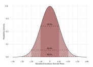

P-values Are Tough And S-values Can Help
p-value, p-values, p value, p values, null hypothesis, test statistic, statistical test, statistical significance, bits, compatibility, results due to chance, evidence, statistical model, null hypothesis significance testing, hypothesis testing, significance testing, neyman, fisher
The \(P\)-value doesn’t have many fans. There are those who don’t understand it, often treating it as a measure it’s not, whether that’s a posterior probability, the probability of getting results due to chance alone, or some other bizarre/incorrect interpretation. [1;2;3] Then there are those who dislike it because they think the concept is too difficult to understand or because they see it as a noisy statistic we’re not interested in.
However, the groups of people mentioned above aren’t mutually exclusive. Many who dislike and criticize the \(P\)-value also do not understand its properties and behavior. This is unfortunate, given how important and widely used they are. In this article, which could also have been titled, \(P\)-values: More Than You Ever Wanted to Know, I take on the task of explaining:
- what \(P\)-values are
- the assumptions behind them
- their properties and behavior
- different schools of interpretation
- misleading criticisms of \(P\)-values
- some valid issues in interpretation
- how these issues can be resolved
1 What is a P-value Anyway?
1.1 Some Definitions & Descriptions
The \(P\)-value is the probability of getting a result (specifically, a test statistic) at least as extreme as what was observed if every model assumption, in addition to the targeted test hypothesis (usually a null hypothesis), used to compute it were correct. [4;3;5]
A simple, mathematically rigorous definition of a \(P\)-value (for those interested) is given by Stark (2015).
Let \(P\) be the probability distribution of the data \(X\), which takes values in the measurable space \(\mathcal{X}\). Let \(\left\{R_{\alpha}\right\}_{\alpha \in[0,1]}\) be a collection of \(P\) -measurable subsets of \(\mathcal{X}\) such that (1) \(P\left(R_{\alpha}\right)=\alpha\) and (2) If \(\alpha^{\prime}<\alpha\) then \(R_{\alpha^{\prime}} \subset R_{\alpha}\). Then the \(P\)-value of \(H_{0}\) for data \(X=x\) is inf \(_{\alpha \in[0,1]}\left\{\alpha: x \in R_{\alpha}\right\}\).
A descriptive but technical definition is given by Sander Greenland below. The description can seem dense, so feel free to skip over it for now and revisit it after reading the rest of the post.
A single \(P\)-value \(p\) is the quantile location of a directional measure of divergence \(t\) = \(t(y;M)\) of the data point \(y\) (usually, the vector in \(n\)-space formed by \(n\) individual observations) from a test model manifold \(M\) in the \(n\)-dimensional expectation space defined the logical structure of the data generator (“experiment” or causal structure) that produced the data \(y\). \(M\) is the subset of the \(Y\)-space into which the conjunction of the model constraints (assumptions) force the data expectation or predict where y would be were there no ‘random’ variability. I also use \(M\) to denote the set of all the model constraints, as well as their conjunction.
With this logical set-up, the observed \(P\)-value is the quantile \(p\) for the observed value \(t\) of \(T\) = \(t(Y;M)\). This \(p\) is read off a reference distribution \(F = F(t;M)\) for \(T\) derived from \(M\). This formulation is essentially that of the “value of P” appearing in Pearson’s seminal 1900 paper on goodness-of-fit tests. Notably, his famed chi-squared statistic is the squared Euclidean distance from \(y\) to \(M\), with coordinates expressed in standard-deviation units derived from \(M\).
More broadly, the statistic \(T\) can be taken as a measure of divergence of a more general embedding or background model manifold \(A\) (which includes all ‘auxiliary’ assumptions) from a more restrictive model \(M\), with the goodness-of-fit case taking \(A\) as a saturated model covering the entire observation space, and the more common “hypothesis testing” case taking M as the conjunction of an unsaturated \(A\) with a targeted ‘test’ constraint (or set of constraints) \(H\). This \(H\) is logically independent of \(A\) and consistent with \(A\), with \(M\) = \(H\) & \(A\) in logical terms, or \(M\) = \(H\) + \(A\) in set-theoretic terms with + being union (in particular, we assume no element in \(H\) is entailed or contradicted by \(A\) and no element in \(A\) is entailed or contradicted by \(H\)).
1.2 Misleading Definitions
It is very common to see the \(P\)-value defined as
The probability of obtaining test results at least as extreme as the results actually observed, under the assumption that the null hypothesis is correct.
Indeed, this is the actual definition currently given on the Wikipedia page for the topic, however, it is inadequate and misleading because it hides and reifies the other assumptions used to compute the \(P\)-value and exclusively focuses on the null hypothesis.
The test hypothesis (often the null hypothesis) is only one component of the entire model that is being tested. This is reflected in the first definition I gave above, which explicitly emphasizes that every model assumption must be true. Thus, the \(P\)-value is sensitive to all these assumptions and their violation(s).
1.3 Auxilliary Assumptions
Some of these key assumptions behind the computation of a \(P\)-value are that some sort of random process was employed (random sampling, random assignment, etc.), that there are no uncontrolled sources of bias (confounding, programming errors, equipment defects, sparse-data bias)[6] in the results, and that the test hypothesis (often the null hypothesis) is correct. Some of these assumptions can be seen in the figure below from [7], which will be discussed later on. This entire set of assumptions is generally referred to as the test model, and that is because the entire assumed model is being tested.

We often start from the position that all those assumptions are correct (hence, we “condition” on them, even though they are often not correct)[7] when calculating the \(P\)-value, so that any deviation of the data from what was expected under those assumptions would be purely random error. But in reality such deviations could also be the result of any assumptions being false, including but not limited to the test hypothesis.
Note: “Conditioning” here refers to taking the assumptions in the model as given, and should not be confused with conditional probability.
For example, in high-energy physics, neutrinos were found in one study to be faster than light due to the resulting large test statistic and corresponding small \(P\)-value, but this result was later found to be a result of a defect in the fiber-optic timing system for that experiment.[8] Thus, the low \(P\)-value was not because the assumed null hypothesis was false, but instead due to a bias in the procedure.
So the \(P\)-value cannot be the probability of one of these assumptions, such as “the probability of getting results due to chance alone.” A statement like this is backwards because it’s quantifying one of the assumptions behind the computation of a \(P\)-value.
This assumption of chance causing the results is assumed to be true (aka 100%) along with several other things, when calculating the \(P\)-value, but this does not mean it is actually correct and the calculation of the \(P\)-value cannot be the probability of one of those assumptions.
1.4 Probability of What?
It is also important to clarify that \(P\)-values are not probabilities of data or parameter values, which many like to say to differentiate from probabilities of hypotheses. Rather, \(P\)-values are probabilities of “data features”, such as test statistics (i.e. a z-score or \(\chi^{2}\) statistic) or can be interpreted as the percentile at which the observed test statistic falls within the expected distribution for the test statistic, assuming all the model assumptions are true.[9;10]
1.5 Properties (Uniformity)
A \(P\)-value is considered to be valid if over repeated trials it would be uniform when the tested hypothesis and all other assumptions used to compute the \(P\)-value are correct (see the histogram below to see what this looks like). Typically, this test hypothesis is a null hypothesis where the tested parameter value is usually 0 or 1, but this property applies to any test hypothesis for any parameter value. Thus, there is the random variable \(P\), which (when valid) follows this uniform distribution, and the realization of this random variable, \(p\), which is the observed \(P\)-value. The latter is what most researchers are interpreting from studies.
Thus, if we were to simulate two variables that are practically the same (meaning there’s no difference between them) and then compare them, say, using a t-test, and we were to iterate this process 10000 times and plot the distribution of the observed P-values, it would be uniform, indicating that any P-value within the interval from 0-1 is just as likely as any other to be observed.
#' @title Simulation of valid P-values where test hypothesis is true
#' @param X The first variable we are simulating
#' @param Y The second variable we are simulating
#' @param n.sim # The number of simulations
#' @param t The object storing the t-test results
#' @param t.sim # Empty numeric vector to contain values
#' @param n.samp # Sample size in each group
#' @NOTE The null hypothesis does not have to be 0, it can be any value.
n.sim <- 10000
t.sim <- numeric(n.sim)
n.samp <- 1000
for (i in 1:n.sim) {
X <- rnorm(n.samp, mean = 0, sd = 1)
Y <- rnorm(n.samp, mean = 0, sd = 1)
df <- data.frame(X, Y)
t <- t.test(X, Y, mu = 0, paired = FALSE,
var.equal = TRUE, data = df)
t.sim[i] <- t[[3]]
}#> Error in theme_less(): could not find function "theme_less"Many frequentist statisticians do not consider \(P\)-values to be valid/useful if they fail to meet this validity criterion of being uniform, hence they do not recognize variants such as the posterior predictive \(P\)-value (which concentrates around values such as 0.5, rather than being uniform) to be valid.
Indeed, there have been great efforts to calibrate the \(P\)-value which ranges from mathematical solutions such as taking the \((1 + [-e*p*\log(p)]^{-1})^{-1}\) which gives the lower bound on the conditional type I error,[11;12] to taking the \(C_{1}(K):=\sqrt{K}-1\) of the \(P\)-value (the square-root calibrator), yielding a test martingale,[13] or even empirically attempting to recalibrate the \(P\)-value by collecting observed \(P\)-values from observational studies with negative controls (“test-hypotheses where the exposure is not believed to cause the outcome”) and using them to calculate the empirical null distribution.[14]
The latter is done since observational studies are prone to several more biases than controlled, randomized experiments, thus the observed \(P\)-values and estimated effect sizes are used to calculate the systematic errors within the sampling distribution and are used for recalibration of the \(P\)-value. Whether or not this approach is effective, however, is a different matter.[15] In short, calibration is an often sought-out property of \(P\)-values.
Many frequentist statisticians do not consider \(P\)-values to be valid/useful if they fail to meet this validity criterion of being uniform, hence they do not recognize variants such as the posterior predictive \(P\)-value (which concentrates around values such as 0.5, rather than being uniform) to be valid.
Indeed, there have been great efforts to calibrate the \(P\)-value which ranges from mathematical solutions such as taking the \((1 + [-e*p*\log(p)]^{-1})^{-1}\) which gives the lower bound on the conditional type I error,[11;12] to taking the \(C_{1}(K):=\sqrt{K}-1\) of the \(P\)-value (the square-root calibrator), yielding a test martingale,[13] or even empirically attempting to recalibrate the \(P\)-value by collecting observed \(P\)-values from observational studies with negative controls (“test-hypotheses where the exposure is not believed to cause the outcome”) and using them to calculate the empirical null distribution.[14]
The latter is done since observational studies are prone to several more biases than controlled, randomized experiments, thus the observed \(P\)-values and estimated effect sizes are used to calculate the systematic errors within the sampling distribution and are used for recalibration of the \(P\)-value. Whether or not this approach is effective, however, is a different matter.[15] In short, calibration is an often sought-out property of \(P\)-values.
2 The Different Interpretations
2.1 The Decision-Theoretic Approach
Many researchers interpret the \(P\)-value in a behavioral, decision-guiding way such as being statistically significant or not (defined below) depending on whether observed p from a study (the realization of the random variable \(P\)) falls below a fixed cutoff level (\(\alpha\), which is the maximum tolerable type I error rate).[16]
2.2 Statistical Significance
Thus, in this approach, users do not care how small or large the observed \(P\)-value \(p\) is, but simply, whether or not it fell beneath the pre-specified \(\alpha\) level (often 0.05). If it falls below \(\alpha\) they behave inline with the rejection of this test hypothesis, and if it fails to fall below \(\alpha\), then they must behave in a manner where they accept this test hypothesis. The phrase statistical significance, simply indicates that the observed \(P\)-value \(p\) fell below this pre-specified \(\alpha\) level, and nothing else. It does not indicate any meaningful significance on its own.
The pioneers of this approach, Jerzy Neyman and Egon Pearson, define this behavioral guidance in their 1933 paper, “On the Problem of the Most Efficient Tests of Statistical Hypotheses”[16]
Without hoping to know whether each separate hypothesis is true or false, we may search for rules to govern our behavior with regard to them, in following which we insure that, in the long run of experience, we shall not be too often wrong.
This decision-making framework may be useful in certain scenarios,[17] where some sort of randomization is possible, where experiments can be repeated, and where there is large control over the experimental conditions, with one of the most notable historical examples being Egon Pearson (son of Karl Pearson and coauthor of Jerzy Neyman) using it to improve quality control in industrial settings.
Contrary to some claims,[18] this approach does NOT require exact replications of the experiments, instead, it requires that a valid \(\alpha\) level is used consistently.[16;19] In this approach, the exact, observed \(P\)-value from a study is not as relevant and cannot validly be interpreted without an entire set of studies that are compared to the fixed error rate (\(\alpha\)).

2.3 The Inductive Approach
Others interpret the \(P\)-value \(p\) in an inductive inferential/evidential (Fisherian) way,[20;21] as a continuous measure of evidence against the very test hypothesis and entire model (all assumptions) used to compute it (let’s go with this for now, even though there are some problems with this interpretation, more on that below).
This interpretation as a continuous measure of evidence against the test hypothesis and the entire model used to compute it can be seen in the figure below from[7]. In one framework (left panel), we may assume certain assumptions to be true (“conditioning” on them, i.e, use of random assignment), and in the other (right panel), we question all assumptions, hence the “unconditional” interpretation. Unlike the Neyman-Pearson approach, this inferential approach allows interpretation of \(P\)-values from single studies, and indeed, lower values of it are taken as more evidence against the tested hypothesis.
2.4 Null-Hypothesis Significance Testing
However, it is also worth pointing out that most individuals do not interpret \(P\)-values from a Neyman-Pearson or Fisherian standpoint, rather, they fuse both approaches together, which is what we commonly know today as “null-hypothesis significance testing.” This approach is regarded by most as being a incompatible hybrid given that it often confuses error rates (\(\alpha\), \(\beta\)), which are fixed before a study, with the \(P\)-value, which is not a fixed error-rate, and the fusion of these approaches often has been blamed for the replication crisis in science by many statisticians. Though some believe these approaches can be reconciled and are useful.[22]
Back to the Fisherian approach, the interpretation of the \(P\)-value as a continuous measure of evidence against the test model that produced it shouldn’t be confused with other statistics that serve as support measures. Likelihood ratios and Bayes factors are absolute measures of evidence for a model compared to another model, whereas the \(P\)-value is a relative measure of “evidence” (more on that below) that can be tricky to interpret.[23;24;25] Indeed, this is why the \(P\)-value is converted by some Bayesians to a lower bound of the Bayes factor by taking \(-e*p*\log(p)\).[11;12]
2.5 Measure of Compatibility
The \(P\)-value is not an absolute measure of evidence for a model (such as the null/alternative model), it is a continuous measure of the compatibility of the observed data with the model used to compute it.[3]
If it’s high, it means the observed data are very compatible with the model used to compute it. If it’s very low, then it indicates that the data are not as compatible with the model used to calculate it, and this low compatibility may be due to random variation and/or it may be due to a violation of assumptions (such as the null model not being true, not using randomization, a programming error or equipment defect such as that seen with neutrinos, etc.).
Low compatibility of the data with the model can be implied as evidence against the test hypothesis, if we accept the rest of the model used to compute the \(P\)-value. Thus, lower \(P\)-values from a Fisherian perspective are seen as stronger evidence against the test hypothesis given the rest of the model.
3 Common, Misleading Criticisms
3.1 Estimation and Intervals
A common criticism put forth by many is that \(P\)-values are useless, given that they cannot tell you the size of the effect and because they are confounded by sample size and effect size, and that researchers should instead give compatibility (confidence) intervals. However, this criticism is nonsensical as they can both be given and serve different purposes.
A \(P\)-value for a particular parameter value gives the compatibility between the test model in question, which will vary from one parameter value to the next, and the data. An interval estimate such as a 95% frequentist interval simply gives the region of parameter values with \(P\)-values above the corresponding \(\alpha\) level, and which are more consistent with the data than the parameter values outside the interval limits. An interval estimate by itself does not explicitly tell one how consistent a parameter value is with the data, which the \(P\)-value does.
3.2 Overstating the Evidence
\(P\)-values are routinely criticized for overstating the amount of evidence from a study. Such statements are also often given using Bayesian arguments, of which many are skeptical. However, the \(P\)-value cannot overstate evidence as it is simply providing the location at which the test statistic fell in the expected distribution, given that every model assumption were true. It is simply indicative of how surprising/extreme the observed result was, given certain assumptions.
Any overstating of evidence, is not an issue of the statistic itself, but rather users. If we treat the \(P-\) value as nothing more or less than a continuous measure of compatibility of the observed data with the model used to compute it (observed \(p\)) given certain model assumptions, we won’t run into some of the common misinterpretations such as “the \(P\)-value is the probability of a hypothesis”, or the “probability of chance alone”, or “the probability of being incorrect”.[3]
Indeed, many of the “problems” commonly associated with the \(P\)-value are not due to the actual statistic itself, but rather researchers’ misinterpretations of what it is and what it means for a study.
The answer to these misconceptions may be compatibilism, with less compatibility (smaller \(P\)-values) indicating a poor fit between the data and the test model and hence more evidence against the test hypothesis.
A \(P\)-value of 0.04 means that assuming that all the assumptions of the model used to compute the \(P\)-value are correct, we won’t get data (a test statistic) at least as extreme as what was observed by random variation more than 4% of the time.
To many, such low compatibility between the data and the model may lead them to reject the test hypothesis (the null hypothesis).
4 Some Valid Issues
4.1 Mismatch With Direction
If you recall from above, I wrote that the \(P\)-value is seen by many as being a continuous measure of evidence against the test hypothesis and model. Technically speaking, it would be incorrect to define it this way because as the \(P\)-value goes up (with the highest value being 1 or 100%), there is less evidence against the test hypothesis since the data are more compatible with the test model. 1 = perfect compatibility of the data with the test model.
As the \(P\)-value gets lower (with the lowest value being 0), there is less compatibility between the data and the model, hence more evidence against the test hypothesis used to compute \(p\).
Thus, saying that \(P\)-values are measures of evidence against the hypothesis used to compute them is a backward definition. This definition would be correct if higher \(P\)-values inferred more evidence against the test hypothesis and vice versa.
4.2 Difficulties Due to Scale
Another problem with \(P\)-values and their interpretation is scaling. Since the statistic is meant to be a continuous measure of compatibility (and relative evidence against the test model + hypothesis), we would hope that differences between \(P\)-values would be equal (on an additive scale), as this makes it easier to interpret.
For example, the difference between 0 and 10 dollars is the same as the difference between 90 and 100 dollars, in that both are a difference of 10 dollars. And this property remains consistent across various intervals, 120 and 130, 1,000,000 and 1,000,010.
Unfortunately, this doesn’t apply to the \(P\)-value because it is on the inverse-exponential scale. The difference between a \(P\)-value of 0.01 and 0.10 is not the same as the difference between 0.90 and 0.99.

For example, with a normal distribution (above), a z-score of 0 results in a \(P\)-value of 1 (perfect compatibility). If we now move to a z-score of 1, the \(P\)-value is 0.31. Thus, we saw a dramatic decrease from a \(P\)-value of 1 to 0.31 with one z-score. A 0.69 decrease in the \(P\)-value.
Now let’s move from a z-score of 1 to a z-score of 2. We saw a decrease of 0.69 with the change in one z-score before, so the new \(P\)-value must be 0.31 - 0.69 = -0.38 right? No. The \(P\)-value for a z-score of 2 is 0.045. The \(P\)-value for a z-score of 3 is 0.003. Even though we’ve only been moving by one z-score at a time, the changes in \(P\)-values don’t remain constant; the decreases become larger and larger.
Thus, the difference between the \(P\)-values of 0.01 and 0.10, in terms of z-score, is substantially larger than the difference between 0.90 and 0.99. Again, this makes it difficult to interpret as a statistic across the board, especially as a continuous measure. This can further be seen in the figure from Rafi & Greenland (2020).
5 Resolution with Surprisals
The issues described above such as the backward definition and the problem of scaling can make it difficult to conceptualize the \(P\)-value as being an evidence measure against the test hypothesis and test model. However, these issues can be addressed by taking the negative log of the \(P\)-value \(–\log_{2}(p)\) , which yields something known as the Shannon information value or surprisal (\(s\)) value,[4;26;5] named after Claude Shannon, the father of information theory.[27]
Unlike the \(P\)-value, this value is not a probability but a continuous measure of information in bits of information against the test hypothesis and is taken from the observed test statistic computed by the test model.
It also provides a more intuitive way to think about \(P\)-values. Imagine that the variable \(k\) is always the nearest integer to the calculated value of \(s\). Now, take for example a \(P\)-value of 0.05, the \(S\)-value for this would be \(s\) = \(–\log_{2}(0.05)\) which equals 4.3 bits of information embedded in the test statistic, which can be implied as evidence against the test hypothesis.
How much evidence is this? \(k\) can help us think about this. The nearest integer to 4.3 is 4. Thus, the data which yield a \(P\)-value of 0.05 which results in an \(s\) value of 4.3 bits of information is no more surprising than getting all heads on 4 fair coin tosses.
Another example. Let’s say our study gives us a \(P\)-value of 0.005, which would indicate to many very low compatibility between the test model and the observed data; this would yield an \(s\) value of \(–\log_{2}(0.005) = 7.6\) bits of information. \(k\) which is the closest integer to \(s\) would be 8. Thus, these data which yield a \(P\)-value of 0.005 are no more surprising than getting all heads on 8 fair coin tosses.
A table of various \(P\)-values and their corresponding \(S\)-values, maximum-likelihood ratios, and likelihood-ratio statistics can be found below from Rafi & Greenland (2020), which includes the general cutoffs used in different scientific fields such as high-energy physics and genome-wide association studies. It also shows how the traditional cutoffs used in these fields can be problematic.
For example, an \(\alpha\) of 0.05, which only corresponds to seeing all heads on 4 fair coin tosses, is practically nothing when compared to the cutoffs used in particle physics and GWAS, which correspond to seeing all heads on 22 and 30 fair coin tosses, respectively.
| P-value (compatibility) | S-value (bits) | Maximum Likelihood Ratio | Deviance Statistic 2ln(MLR) |
|---|---|---|---|
| 0.99 | 0.01 | 1.00e+00 | 0.00 |
| 0.9 | 0.15 | 1.01e+00 | 0.02 |
| 0.5 | 1.00 | 1.26e+00 | 0.45 |
| 0.25 | 2.00 | 1.94e+00 | 1.32 |
| 0.1 | 3.32 | 3.87e+00 | 2.71 |
| 0.05 | 4.32 | 6.83e+00 | 3.84 |
| 0.025 | 5.32 | 1.23e+01 | 5.02 |
| 0.01 | 6.64 | 2.76e+01 | 6.63 |
| 0.005 | 7.64 | 5.14e+01 | 7.88 |
| 1e-04 | 13.29 | 1.94e+03 | 15.10 |
| 5 sigma (~ 2.9 in 10 million) | 21.70 | 5.20e+05 | 26.30 |
| 1 in 100 million (GWAS) | 26.60 | 1.40e+07 | 32.80 |
| 6 sigma (~ 1 in a billion) | 29.90 | 1.30e+08 | 37.40 |
| Abbreviations: | |||
| Table 1: $P$-values and binary $S$-values, with corresponding maximum-likelihood ratios (MLR) and deviance (likelihood-ratio) statistics for a simple test hypothesis H under background assumptions A |
Unlike the \(P\)-value, the \(S\)-value is more intuitive as a measure of refutational evidence against the test hypothesis since its value (bits of information against the test hypothesis) increases with less compatibility, whereas the opposite is true for the \(P\)-value.
5.0.1 Some Examples
Let’s try using some data to see this in action. I’ll take a sample experimental dataset from R on the effects of different conditions on dried plant weight. We can plot the data and run a one-way ANOVA.
pg <- force(PlantGrowth)
(Hmisc::describe(pg))
#> pg
#>
#> 2 Variables 30 Observations
#> --------------------------------------------------------------------------------
#> weight
#> n missing distinct Info Mean pMedian Gmd .05
#> 30 0 29 1 5.073 5.09 0.8131 3.983
#> .10 .25 .50 .75 .90 .95
#> 4.170 4.550 5.155 5.530 6.038 6.132
#>
#> lowest : 3.59 3.83 4.17 4.32 4.41, highest: 5.87 6.03 6.11 6.15 6.31
#> --------------------------------------------------------------------------------
#> group
#> n missing distinct
#> 30 0 3
#>
#> Value ctrl trt1 trt2
#> Frequency 10 10 10
#> Proportion 0.333 0.333 0.333
#> --------------------------------------------------------------------------------Looks interesting. We can see some differences from the graph. Here’s what our test output gives us,
res <- anova(lm(weight ~ group, data = pg))
ztable(res)
#> Error in ztable(res): could not find function "ztable"(obs_p <- res[1, 5])
#> [1] 0.01590996If we had set our \(\alpha\) to the traditional 0.05 level before the experiment, we can reject the test hypothesis (the null hypothesis), but that is not as interesting from a continuous evidential perspective. How can I interpret this \(P\)-value of 0.0159 more intuitively?
Let’s convert it into an \(S\)-value.
-log2(obs_p)
#> [1] 5.97\[–\log_2(0.0159) = 5.97\]
\[s= 5.97\]
That is 5.97 bits of information against the null hypothesis.
Remember, \(k\) is the nearest integer to the calculated value of \(s\) and in this case, would be 6. So these results (the test statistic, \(F\)(4.85)) are as surprising as getting all heads on 6 fair coin tosses. Somewhat surprising, depending on the individual interpreting the results.
How would we interpret it within the context of a given confidence interval? The \(S\)-value tells us that values within the computed 95% CI: have at most 4.3 bits of information against them. That is because all parameter values within a 95% CI have \(P\)-values greater than 0.05.
So those parameter values that are inside the 95% interval estimate have less bits of information against them, than the parameter values that go further and further away from the center of the 95% interval estimate. The point estimate is the most compatible with the data (meaning it has the least refutational information against it), while those values near the limits have more information against them.
In other words, as values head in the directions outside the interval, there is more refutational information against them, as depicted by the following function from Rafi & Greenland, 2020, which is known as the surprisal function.
The \(S\)-value is not meant to replace the \(P\)-value, and it isn’t superior to the \(P\)-value. It is merely a logarithmic transformation of it that rescales it on an additive scale and tells us how much information is embedded within the test statistic and can be used as evidence against the test hypothesis. It is meant to be a device to help interpret the information one obtains from a calculated \(P\)-value.
I’ve constructed a calculator that converts observed \(P\)-values into \(S\)-values and provides an intuitive way to think about them. For a more detailed discussion of \(S\)-values, see this article, in addition to the references below them.
6 S-value Calculator
Acknowledgments: I’m very grateful to Sander Greenland for his extensive commentary and corrections on several versions of this article. My acknowledgment does not imply endorsement of my views by these colleagues, and I remain solely responsible for the views expressed herein.
The analyses were run on:
#> R version 4.5.0 (2025-04-11)
#> Platform: aarch64-apple-darwin20
#> Running under: macOS Sequoia 15.6.1
#>
#> Matrix products: default
#> BLAS: /Library/Frameworks/R.framework/Versions/4.5-arm64/Resources/lib/libRblas.0.dylib
#> LAPACK: /Library/Frameworks/R.framework/Versions/4.5-arm64/Resources/lib/libRlapack.dylib; LAPACK version 3.12.1
#>
#> Random number generation:
#> RNG: Mersenne-Twister
#> Normal: Inversion
#> Sample: Rejection
#>
#> locale:
#> [1] en_US.UTF-8/en_US.UTF-8/en_US.UTF-8/C/en_US.UTF-8/en_US.UTF-8
#>
#> time zone: America/New_York
#> tzcode source: internal
#>
#> attached base packages:
#> [1] splines grid stats4 parallel stats graphics grDevices utils datasets methods base
#>
#> other attached packages:
#> [1] pbmcapply_1.5.1 texPreview_2.1.0 tinytex_0.57 rmarkdown_2.29 brms_2.22.0
#> [6] bootImpute_1.2.2 knitr_1.50 boot_1.3-31 reshape2_1.4.4 ProfileLikelihood_1.3
#> [11] ImputeRobust_1.3-1 gamlss_5.4-22 gamlss.dist_6.1-1 gamlss.data_6.0-6 mvtnorm_1.3-3
#> [16] performance_0.14.0 summarytools_1.1.4 tidybayes_3.0.7 htmltools_0.5.8.1 Statamarkdown_0.9.2
#> [21] car_3.1-3 carData_3.0-5 qqplotr_0.0.6 ggcorrplot_0.1.4.1 Amelia_1.8.3
#> [26] Rcpp_1.0.14 blogdown_1.21 doParallel_1.0.17 iterators_1.0.14 foreach_1.5.2
#> [31] lattice_0.22-7 bayesplot_1.12.0 wesanderson_0.3.7 VIM_6.2.2 colorspace_2.1-1
#> [36] here_1.0.1 progress_1.2.3 loo_2.8.0 mi_1.1 Matrix_1.7-3
#> [41] broom_1.0.8 yardstick_1.3.2 svglite_2.2.1 Cairo_1.6-2 cowplot_1.1.3
#> [46] mgcv_1.9-3 nlme_3.1-168 xfun_0.52 broom.mixed_0.2.9.6 reticulate_1.42.0
#> [51] kableExtra_1.4.0 posterior_1.6.1 checkmate_2.3.2 parallelly_1.45.0 miceFast_0.8.5
#> [56] randomForest_4.7-1.2 missForest_1.5 miceadds_3.17-44 mice_3.18.0 quantreg_6.1
#> [61] SparseM_1.84-2 MCMCpack_1.7-1 MASS_7.3-65 coda_0.19-4.1 latex2exp_0.9.6
#> [66] rstan_2.32.7 StanHeaders_2.32.10 lubridate_1.9.4 forcats_1.0.0 stringr_1.5.1
#> [71] dplyr_1.1.4 purrr_1.0.4 readr_2.1.5 tibble_3.2.1 ggplot2_3.5.2
#> [76] tidyverse_2.0.0 ggtext_0.1.2 concurve_2.7.7 showtext_0.9-7 showtextdb_3.0
#> [81] sysfonts_0.8.9 future.apply_1.11.3 future_1.58.0 tidyr_1.3.1 magrittr_2.0.3
#> [86] rms_8.0-0 Hmisc_5.2-3
#>
#> loaded via a namespace (and not attached):
#> [1] dichromat_2.0-0.1 nnet_7.3-20 TH.data_1.1-3 vctrs_0.6.5 digest_0.6.37
#> [6] png_0.1-8 shape_1.4.6.1 proxy_0.4-27 magick_2.8.6 fontLiberation_0.1.0
#> [11] withr_3.0.2 ggpubr_0.6.0 survival_3.8-3 doRNG_1.8.6.2 emmeans_1.11.1
#> [16] MatrixModels_0.5-4 systemfonts_1.2.3 ragg_1.4.0 zoo_1.8-14 V8_6.0.4
#> [21] ggdist_3.3.3 DEoptimR_1.1-3-1 Formula_1.2-5 prettyunits_1.2.0 rematch2_2.1.2
#> [26] httr_1.4.7 rstatix_0.7.2 globals_0.18.0 ps_1.9.1 rstudioapi_0.17.1
#> [31] extremevalues_2.4.1 pan_1.9 generics_0.1.4 processx_3.8.6 base64enc_0.1-3
#> [36] curl_6.2.3 mitools_2.4 desc_1.4.3 xtable_1.8-4 svUnit_1.0.6
#> [41] pracma_2.4.4 evaluate_1.0.3 hms_1.1.3 glmnet_4.1-9 rcartocolor_2.1.1
#> [46] lmtest_0.9-40 robustbase_0.99-4-1 matrixStats_1.5.0 svgPanZoom_0.3.4 class_7.3-23
#> [51] pillar_1.10.2 caTools_1.18.3 compiler_4.5.0 stringi_1.8.7 jomo_2.7-6
#> [56] minqa_1.2.8 plyr_1.8.9 crayon_1.5.3 abind_1.4-8 metadat_1.4-0
#> [61] sp_2.2-0 mathjaxr_1.8-0 rapportools_1.2 twosamples_2.0.1 sandwich_3.1-1
#> [66] whisker_0.4.1 codetools_0.2-20 multcomp_1.4-28 textshaping_1.0.1 bcaboot_0.2-3
#> [71] openssl_2.3.3 flextable_0.9.9 QuickJSR_1.7.0 e1071_1.7-16 gridtext_0.1.5
#> [76] lme4_1.1-37 fs_1.6.6 itertools_0.1-3 listenv_0.9.1 Rdpack_2.6.4
#> [81] pkgbuild_1.4.8 estimability_1.5.1 ggsignif_0.6.4 callr_3.7.6 tzdb_0.5.0
#> [86] pkgconfig_2.0.3 tools_4.5.0 rbibutils_2.3 viridisLite_0.4.2 DBI_1.2.3
#> [91] numDeriv_2016.8-1.1 fastmap_1.2.0 scales_1.4.0 officer_0.6.10 opdisDownsampling_1.0.1
#> [96] insight_1.3.0 rpart_4.1.24 farver_2.1.2 reformulas_0.4.1 survminer_0.5.0
#> [ reached 'max' / getOption("max.print") -- omitted 55 entries ]